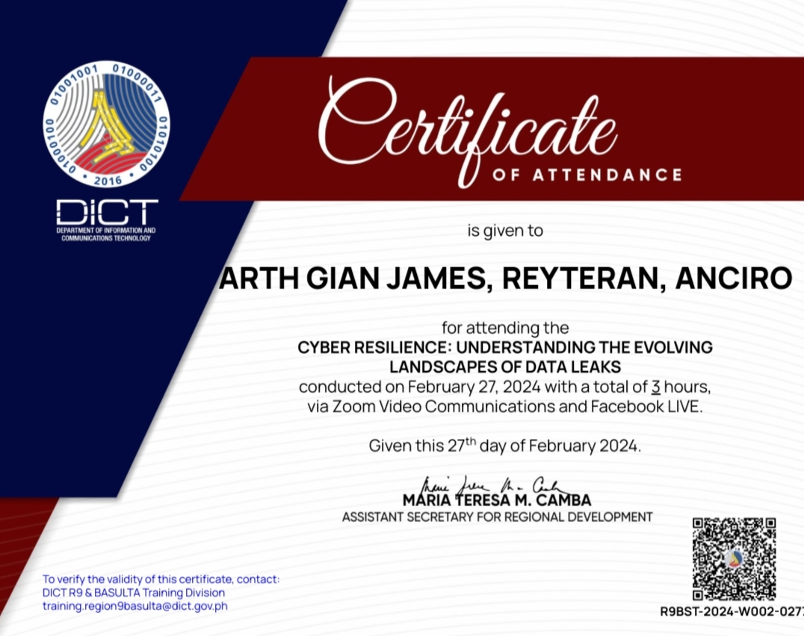

Gian Anciro

FB | Spotify | Github | FHS collection
FB | Spotify | Github | FHS collection
21 years old, from paulba ligao city, bsis student 3rd year, my motto in life is to treat others the way you want to be treated, my thoughts on modern art is that people think it is a shortcut and lazy modern art is throwing arrows mindlessly until you hit something. lack of consistency and creativity, is sufficed by burst of efforts and intruiged. i consider myself a modern artist. all our actions means just to feel something i started education in paulba elementary school. we experienced the 90s way. and its fading. i continued highschool in paulba national highschool. i think it is the best school. the teachers were very passionate and met new friends i transferred in senior high to st mary of ligao until graduating and then college is bicol university polsngui campus
My favorite movie is city of god 2002, casablanca, gone with the wind, the good bad and ugly, bong jon hoo movies, the wailing, the medium, genus pan 2020, reservoir dogs, old boy, i saw the devil, clockwork orange, seven samurai, wolf of wallstreet, taxi driver, pulp fiction, inglorious basterds, dr strangelove, memento, apocalypse now, cinema paradiso, the stranger, birdman, goodfellas, one flew over the cuckoos nest, fight club, forrest gump, metro manila 2013
Ai essentials
Understanding the evolving landscapes of data leaks
my best works so far, a school project in second year. i wrote all the code myself. using guides and knowledge from stackoverflow. since chatgpt is unknown to me since i started working on this project. fhs archive or filipino horror stories archive. it is a complete and functional website. users can chat with other, post, delete, edit stories, comment on stories, follow other users, view analytics, like other stories, user can view stories by categories, popularities, likes and many more. users can report each other admin can ban users. admin can view the users with most report and admin can see analytics and make announcements it is written in php, mysql, css and html
Virtual Restauranta console based project, written in c++ i wrote all the code myself , it taught me conditions and loops in programming. this is an assignment from second year